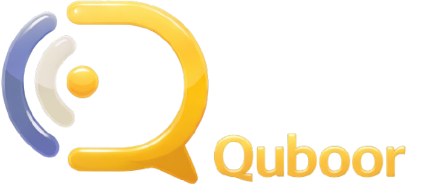
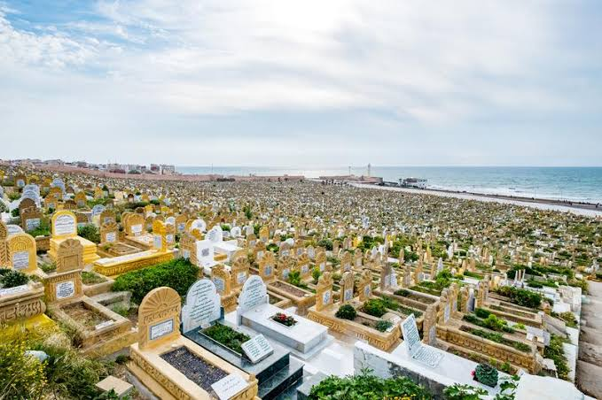

Recensement & Digitalisation
Collecte et structuration des données funéraires , noms, dates, emplacements, inscriptions. Création d'une base de données fiable et accessible pour la mémoire collective.

Préserver la mémoire.
Structurer l’avenir.
Quboor digitalise les données funéraires et structure les métiers des cimetières pour bâtir un modèle digne, transparent et durable à l’échelle nationale.

Quboor est une initiative citoyenne et sociale reposant sur l’engagement collectif. Chaque contribution renforce la structuration du secteur et la préservation du patrimoine mémoriel.